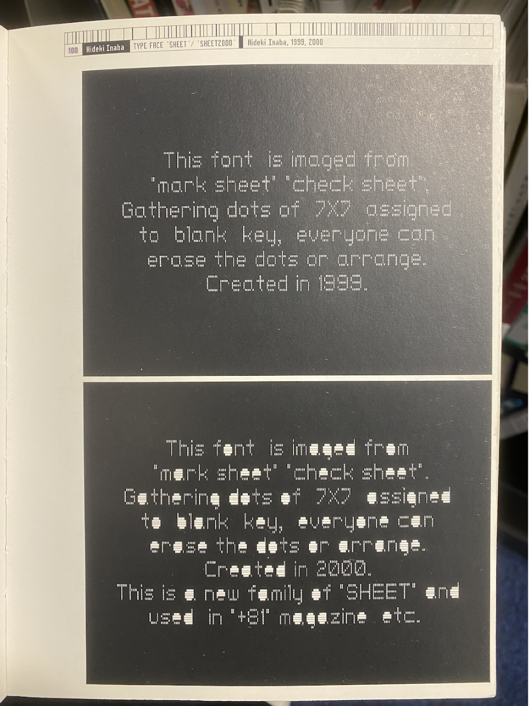
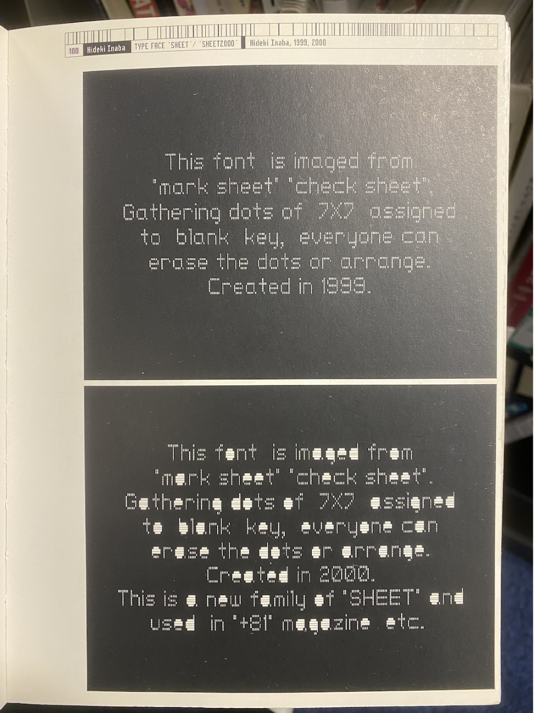

codewords SKO 2024
michelle hoang
codewords SKO 2024
michelle hoang
In the morning we had a quick look at the useful nature of visual references, where we observed works from Japanese modernist designer Ikko Tanaka. His works involved geometric yet bold and colourful compositions. By gathering visual references for our project it helps us to learn and gain inspiration on what makes an effective design. During the week as I was conveniently studying at the RMIT library, I managed to flip through a few design books and collected some pages of visual references that I liked and considered how they could be reimagined as interactive websites. I was able to find works by Toshio Yamagata, sourced from Art Direction Japan and Hideki Inaba’s “ Typeface Sheet"/ “Sheet2000” sourced from JaPan Graphics (JPG).
 

Week 9 also marked the start of really focusing on our projects and getting started on the code to progressively build our websites. By having a more self-guided week, I took the time to work on coding my SKO website in class. As I had already planned on the layout of my starting page and landing page I wanted to start on linking the two pages together. My idea was that on the starting page the user would be able to click on the animated house the enter the landing page. Found a tutorial on youtube that allowed me to utilise an image (my animated house gif) as a button that can be clicked to link to another page through HTML. Although I managed to link the two pages together it still had some minor tweaks to be made which I needed assistance on.
The tutorial I followed: How To Use An Image As A Link In HTML by themesCode
In the afternoon we then learnt how to work with classes in P5.js by creating wiggly letters. By following this tutorial it showed us how to code letters that randomly generate when the page is clicked. The letters will then begin shaking and and changing sizes. By learning about how to create classes through this tutorial, I found it a little confusing to get my head around and and why certain lines of code function. However it was useful to know as it was also an important part of code for my final project.

During the week I also started re doing the code for the bouncing spheres which I found another tutorial by Patt Vira that followed what I was looking for. The video demonstrated how to code balls that can spawn and bounce when the user clicks on the webpage. However as I followed the tutorial and substituted the ellipse shapes with the sphere elements I created with Illustrator the page would not respond. After checking and adjusting the code multiple times I struggled finding a solution so I left it for debugging in our next class.
The tutorial I followed: p5.js Coding Tutorial | Array of Bouncing Balls (OOP / mousePressed) by Patt Vira
I also refined my animal party gif on Procreate by adding more animals like I intended as well as little musical notes that surrounds the party. The animals consist of a cat, bear, dog, frog and rabbit, each with their own animated dance moves and accessories. The gif was made with two layers with 5 frames per second that flip back and forth. Overall I am quite satisfied with how this revised gif turned out and its pixelated strokes that add some character to its design.